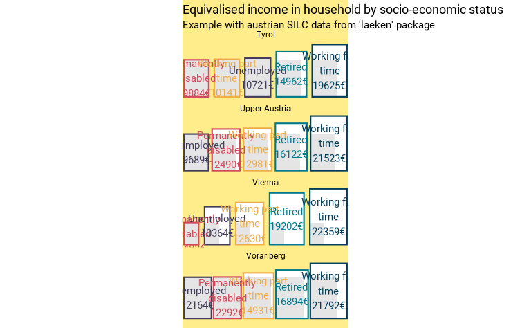

fonctionr dispose de quelques fonctions purement
graphiques. Leur objectif est soit d’uniformiser les graphiques pour une
publication, soit de produire des graphiques originaux à partir de
résultats déjà calculés. Ces fonctions ne sont pas toutes très élaborées
mais peuvent s’avérer utiles. Nous les décrivons sur cette page.
theme_fonctionr() &
load_and_active_fonts()
theme_fonctionr() est une fonction qui permet
d’appliquer le thème de fonctionr à un objet
ggplot2. Cette fonction a un intérêt si l’on veut
uniformiser l’esthétique de tous les graphiques pour une publication -
ceux qui sont produits avec fonctionr et ceux qui ne le
sont pas. L’argument font permet d’indiquer la police
d’écriture à utiliser : une police disponible sur votre système ou une
de celles directement contenues dans fonctionr. La fonction
load_and_active_fonts() est automatiquement exécutée
lorsque theme_fonctionr() est appliqué : celle-ci a pour
but de rendre disponibles les polices incluses dans le package. Cette
fonction est par ailleurs autonome et permet de charger facilement les
polices d’écriture contenues dans fonctionr afin de les
rendre disponibles pour n’importe quelle utilisation avec
ggplot2. Voir la documentation de la fonction pour
connaître les polices incluses dans le package.
# Loading of data
data(eusilc, package = "laeken")
tab1 <- eusilc |>
as_survey_design(ids = db030, strata = db040, weights = rb050) |>
group_by(pb220a) |>
summarise(
prop = survey_mean(eqIncome > 10000, proportion = T, vartype = "ci", na.rm = T)
)
ggtab1 <- tab1 |>
ggplot(aes(x = pb220a, y = prop)) +
geom_col() +
labs(title = "I'm a graphic") +
coord_flip()
ggtab2 <- ggtab1 +
theme_fonctionr(font = "Montserrat")
ggtab1 | ggtab2
esth_graph()
esth_graph() est une fonction qui permet de construire
facilement une graphique similaire à ceux produit par les autres
fonction mais directement à partir d’une tableau de résultats calculé
antérieurement. Cette fonction a un intérêt si l’on veut appliquer
l’esthétique graphique de fonctionr mais à des indicateurs
qui ne sont pas calculés par une fonction de fonctionr.
esth_graph() permet aisément d’intégrer plusieurs éléments
que l’on retrouve dans d’autres graphiques produits par
fonctionr : valeurs de l’indicateur, bornes d’intervalle de
confiance, nombres d’individus dans l’échantillon. La logique
d’esth_graph() est différente de celle de
theme_fonctionr() : la première fonction produit un
graphique à partir d’une table, alors que la seconde applique un thème à
un graphique existant.
En comparaison des autres fonctions, esth_graph() n’a
pas d’argument data, mais un argument tab qui
doit correspondre à la table avec les indicateurs (il s’appelle
tab car il doit être similaire à l’objet tab
produit par la plupart des fonctions de fonctionr). Les
arguments var et value sont obligatoires et
ils indiquent respectivement les colonnes dans tab avec nom
de l’indicateur et sa valeur. reorder et
show_value. error_low, error_upp
et n_var permettent d’indiquer les colonnes dans
tab où se trouvent les bornes inférieures et supérieures
des barres d’erreurs et le nombre de personnes dans l’échantillon. Par
défaut, ces arguments ont une valeur NULL, ce qui conduit à
ne pas montrer ces éléments dans le graphique. name_total
permet d’indiquer le nom du total dans tab de manière à ce
que cette valeur soit mise en évidence (couleur et position) dans le
graphique.
tab2 <- eusilc |>
as_survey_design(ids = db030, strata = db040, weights = rb050) |>
group_by(db040) |>
cascade(
mean = survey_mean(eqIncome, vartype = "ci"),
n = unweighted(n()),
.fill = "Total"
)
esth_graph(tab2,
value = mean,
var = db040,
error_low = mean_low,
error_upp = mean_upp,
n_var = n,
name_total = "Total",
reorder = T,
digits = 1,
unit = "€"
)
make_surface()
make_surface() permet de créer la représentation de
différentes valeurs déja calculées en tant que surfaces - sous la forme
de carrés. Il s’agit d’un graphique potentiellement intéressant si l’on
veut représenter la taille des logements en m², par exemple. La fonction
est purement graphique ; elle s’applique sur un dataframe de plusieurs
lignes comprenant les modalités/groupes à comparer (argument
var) et la valeur pour chacun d’eux (value).
La fonction est donc idéalement applicable au dataframe tab
produit par central_group(). Notre package
fonctionr étant destiné à l’analyse inférentielle, les
bornes supérieures et inférieures des intervalles de confiance peuvent
être indiquées (error_low et error_upp) ;
elles sont alors affichées sur le graphique d’une manière originale,
comme carrés en pointillés autour de la valeur dans l’échantillon
(show_ci = FALSE pour les désactiver). L’ordonnancement des
modalités selon la valeur est possible avec l’argument
reorder = TRUE.
eusilc$pl030_rec <- NA
eusilc$pl030_rec[eusilc$pl030 == "1"] <- "Working full time"
eusilc$pl030_rec[eusilc$pl030 == "2"] <- "Working part time"
eusilc$pl030_rec[eusilc$pl030 == "3"] <- "Unemployed"
eusilc$pl030_rec[eusilc$pl030 == "4"] <- "Student"
eusilc$pl030_rec[eusilc$pl030 == "5"] <- "Retired"
eusilc$pl030_rec[eusilc$pl030 == "6"] <- "Permanently disabled"
eusilc$pl030_rec[eusilc$pl030 == "7"] <- "Fulfilling domestic tasks"
eusilc_mean <- mean_group(
eusilc,
group = pl030_rec,
quanti_exp = py010n + py050n + py090n + py100n + py110n + py120n + py130n + py140n,
filter_exp = !pl030_rec %in% c("Student", "Fulfilling domestic tasks") & db040 == "Tyrol",
weights = rb050
)
eusilc_mean$tab |>
make_surface(
var = pl030_rec,
value = mean,
error_low = mean_low,
error_upp = mean_upp,
reorder = T,
wrap_width_lab = 15,
unit = "€",
title = "Equivalised income in household by socio-economic status",
subtitle = "Example with austrian SILC data from 'laeken' package"
)
La fonction dispose de plusieurs options graphiques. Elle peut
afficher des facettes en renseignant la variable dans l’argument
facet (le dataframe doit être au format tidy). Le
réordonnancement des modalités fonctionne également avec des facettes :
dans ce cas, les couleurs des carrés permettent de facilement repérer
l’ordre différent par modalité de facette ; on peut indiquer dans
pal n’importe quelle des palettes de couleur des packages
MetBrewer, MoMAColors ou
PrettyCols. L’argument compare = TRUE permet
d’afficher la surface la plus petite en surimposition de chaque carré
(par modalité de facette le cas échéant), pour facilement visualiser les
inégalités entre les groupes. L’argument position permet de
régler l’alignement des surfaces au centre ou en bas ("mid"
ou "bottom"). L’argument bg (qui signifie
background) permet de définir la couleur du fond.
eusilc_mean_region <- mean_group(
eusilc,
group = pl030_rec,
facet = db040,
quanti_exp = py010n + py050n + py090n + py100n + py110n + py120n + py130n + py140n,
filter_exp = !pl030_rec %in% c("Student", "Fulfilling domestic tasks") & db040 %in% c("Tyrol", "Upper Austria", "Vienna", "Vorarlberg"),
weights = rb050
)
eusilc_mean_region$tab |>
make_surface(
var = pl030_rec,
facet = db040,
value = mean,
error_low = mean_low,
error_upp = mean_upp,
reorder = T,
show_ci = F,
compare = T,
bg = "lightgoldenrod1",
position = "bottom",
wrap_width_lab = 15,
unit = "€",
pal = "Lively",
title = "Equivalised income in household by socio-economic status",
subtitle = "Example with austrian SILC data from 'laeken' package"
)